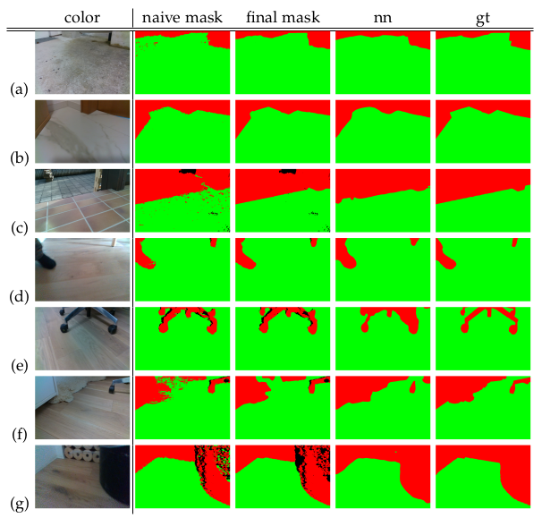

Improving robot navigation through semantic image segmentation
# Introduction
This repository contains source code for the ground segmentation described in my thesis.
The data generation described in the thesis was implemented in Python3 with the help of open source libraries. The pipeline is split into individual steps. Each step is executed individually via separate python files.
Each step is written to only process new data and skip already processed files. This allows you to simply run the whole pipeline again after creating new recordings files. No parameters need to be passed specifically for each recording. To reset or rerun the pipeline for a specific dataset, simply delete its corresponding folder in the configured data output folder and re-run the pipeline.
# Dependencies
The project depends on certain python libraries to be present, the most important ones are described here. A full list of dependencies can be found in the included requirements.txt file.
- The rosbag package is used to read the rosbag recording files. It is required for step 1 of the process. This library is automatically present if ros is installed or can be installed via the python package manager.
- OpenCV is used for common image manipulation tasks and the point cloud computation. Its implementation of the Stereo Block Matching Algorithm was used to convert the two infrared images into a disparity map. Further, the projection from the disparity map into the 3d point cloud and the projection from the 3d point cloud into the color image frame were sped up with the help of opencv's native implementation.
- python-pcl: The calculation of the normal vectors of the point cloud points and the plane segmentation with RANSAC was done using the point cloud library. To access the point cloud library functions in python the python-pcl wrapper was used. It allows us to access some of its functions from python.
- PyDenseCRF is a python wrapper for Philipp Krähenbühl's dense (fully connected) CRFs. It is used for the mask refinement in step 5.
# Configuration
The configuration file config.py defines the source folder of the recordings (rosbag files) and also the destination folder of the output files. Furthermore, thresholds and parameters for various computation steps can be configured. The configuration file contains comments about what effect the individual parameters have. The default configuration works well for the used Intel RealSense D435.
# Inverted mode
If the camera was mounted upside-down, the dataset can be processed as-well without any changes to the code by changing the dataset's name to end in _inv. This is useful when the camera is mounted upside down on the robot or a second recording is made with the camera upside down to avoid problems with occlusion as discussed in the thesis.
# Step 1: Data extraction
This script extracts the images and extrinsic and intrinsic camera parameters from the rosbag file. It expects a certain format in which the files have to be in the configured input folder. Each recording session has its own subfolder, in which rosbag records the individual files one by one. The name of the final dataset will be the name of the folder. The project includes a utility script record.sh which automatically creates a folder and launches rosbag with the correct parameters.
recordings/
- indoor1/
- indoor1_2000-01-02-15-42-52_0.bag
- indoor1_2000-01-02-15-42-52_1.bag
- indoor2/
- indoor2_2000-01-02-13-22-12_0.bag
...
Step 1 produces the following output files per chunk of each recording.
- color.npy all color images as numpy matrix of type
uint8and shapeN x W_c x H_c x 3. - infra1.npy, infra2.npy the left and right infrared images as a numpy matrix of shape
N x W_i x H_i x 1.
Where N is the number of output recorded frames, H_c, W_c is the resolution of the color image and H_i, W_i the resolution of the infrared images.
# Frame synchronization
The script expects both infrared frames and the color frame to be in sync. This is enforced by only extracting IR and color frames where the timestamp of the message matches exactly.
This was found to be the case for the Intel RealSense D435, as long as the exposure of the color camera is lower than one over the infrared camera's framerate. If the color camera's exposure is set to automatic, frames may be skipped in low lighting conditions. The output of the script shows how many matching and non-matching frames were found.
$ python step1_bagfile.py
looking for bagfiles in /home/user/Documents/
extracting /home/user/Documents/demo/2020-01-03-12-02-23_1.bag
found 192 matching pairs of 237 total frames
extracting /home/user/Documents/demo/2020-01-03-12-02-13_0.bag
found 210 matching pairs of 236 total frames
extracting /home/user/Documents/demo/2020-01-03-12-02-33_2.bag
found 72 matching pairs of 97 total frames
# Step 2: Data reduction
This step reduces the recorded frames based on the technique described in the thesis. The threshold for the dissimilarity measure and the batch size (N_{batch}) from which the sharpest image is selected can be set in the configuration file. The data reduction is performed for each chunk of the recording individually. After all chunks of a recording are reduced they are combined into one file and the temporary files from each chunk are deleted.
The batch size, from which the sharpest frame will be drawn, dictates the maximum rate at which new frames will be chosen and saved in the final output. This rate can be calculated by FPS_{max} = FPS_{recording} / N_{batch}
where $FPS_{recording}$ is the frame rate at which the camera recorded. Additionally, if the camera image was still during parts of the recording, the final output frame rate may be lower.
Step 2 produces the same output files as step 1, but with reduced data and all chunks of a recording will be combined into one output file. The step's output lists all processed steps.
$ python step2_reduce_data.py
reduced /data/demo_2020-01-03-12-02-23_1 from 192 frames to 14
reduced /data/demo_2020-01-03-12-02-13_0 from 210 frames to 13
reduced /data/demo_2020-01-03-12-02-33_2 from 72 frames to 3
combining /data/demo
deleting /data/demo_2020-01-03-12-02-23_1
deleting /data/demo_2020-01-03-12-02-13_0
deleting /data/demo_2020-01-03-12-02-33_2
# Step 3: Point cloud calculation
This step takes the previously extracted infrared images from infra1.npy and infra2.npy and calculates a 3d point cloud without any color information. This point cloud is saved to coords.npy as a numpy array with type float32 and shape N x (W_i * H_i) x 3. Any points without disparity information or out of plausible range are filled with NaN values.
The parameters for the Stereo Block Matching algorithm can be changed in the configuration file. The extrinsic and intrinsic camera parameters for the projection into 3d are taken from the data camera parameters which are published on the ROS camera topic and the ROS transform system. For this step to work properly the camera has to be properly setup in ROS and defined in the transformation graph.
# Step 4: plane segmentation
Step 4 uses the calculated point cloud from the previous step and extracts the ground plane. The calculated plane's model is saved to planes.npy .
Since the segmentation is not only based on the distance from the ground plane, but additional constraints, a map of all inliers is saved in good_idx.npy as a numpy array with type bool and shape N x (W_i * H_i) x 1.
# Step 5: mask generation
In this step, the calculated inliers are projected into the color camera's reference frame. The initial mask is refined as described in the thesis. The refined mask and the color images are saved into individual folders in the the output folder. The masks are saved as indexed png files. Where index 0 is the ground class, index 1 is the obstacle class and index 255 is the ignore class.
output/
- indoor1/
- color/
indoor1_00000.png
indoor1_00001.png
...
- label/
indoor1_00000.png
indoor1_00001.png
...
# Step 6: Mask refinement
This step implements the connected component refinement described in the thesis. The cleaned masks are saved analog to the input masks in an adjacent folder named label_clean.
# Step 7: Manual review
The last step in the pipeline is the human review step. A user interface was implemented to assist the reviewer in manually flag each frame as good or bad. The reviewer is presented with a blended image of a mask and the color image. He then has to decide whether to keep the frame or remove it. Additionally, a frame can be skipped to be reviewed later.
Keyboard actions:
- Return: mark mask as good
- Backspace: mark mask as bad
- Left Arrow / Right Arrow: go one mask backwards / forwards
- Escape: close the interface and save all changes
- 1, 2, 3: switch between (1) blended, (2) mask only or (3) color only view mode
The user interface outputs two text files in the output folder named good.txt and bad.txt with the respective file paths of good and bad masks. These files can then be used to collect the data for training the neuronal network.